ฟิสิกส์ · บทที่ 9 คลื่น · Y12
9.4.3 การแทรกสอดของคลื่น
คำถามนำ → สังเกตรูป → ค้นพบสูตร → เรขาคณิต → เฟสตรงข้าม → แบบฝึกการแทรกสอด
ใช้หัวข้อ 1–5 เรียนหลักการก่อน ลองตอบคำถามเหนือช่องแล้วกด + เพื่อดูเฉลย จากนั้นเลือกฝึกจากหัวข้อ 6–8
1. คลื่นมาพบกัน
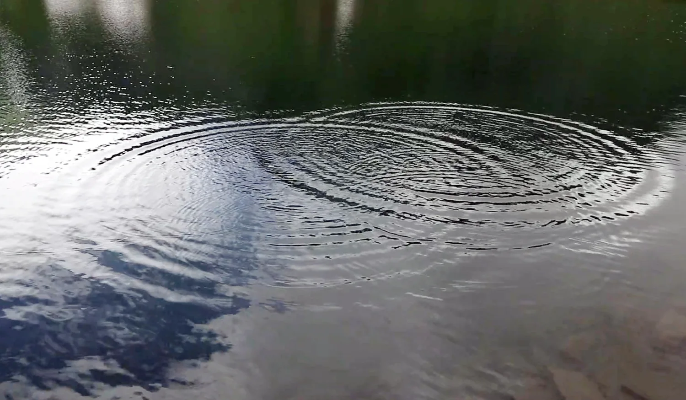
คำถามนำ: เมื่อคลื่นน้ำสองขบวนมาพบกัน ผิวน้ำตรงที่ซ้อนทับเป็นอย่างไร?
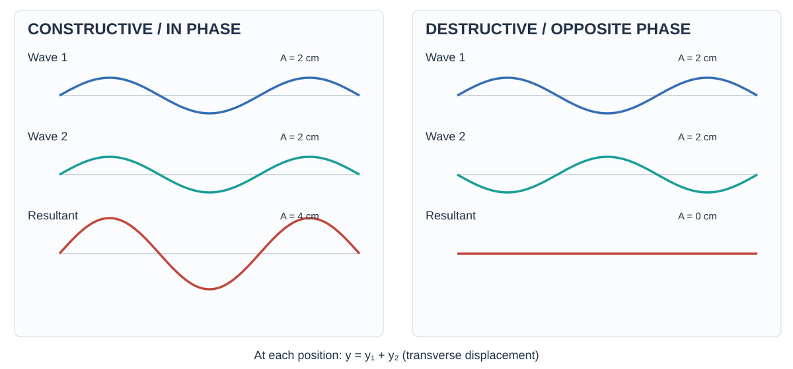
2. บัพและปฏิบัพคืออะไร?
เมื่อคลื่นน้ำสองขบวนซ้อนทับกัน ให้สังเกตว่าการกระจัดที่จุดหนึ่งเปลี่ยนไปอย่างไรตลอดการสั่น
บัพคืออะไร?
ปฏิบัพคืออะไร?
3. จากรูปคลื่นน้ำสู่ผลต่างทางเดิน
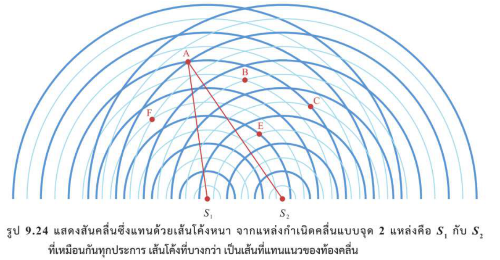
ในรูป 9.24 เส้นหนาคือสันคลื่น เส้นบางคือท้องคลื่น ให้ตามแนวหน้าคลื่นจากทั้งสองแหล่งมาที่จุดเดียวกัน
ผลการสังเกต: จุด A, B, C, E, F เป็นสันหรือท้องมาพบกัน?
A สัน–สัน · B, F ท้อง–ท้อง · C, E สัน–ท้อง
จากรูป: จุด A, B, C, E, F อยู่บนแนวบัพหรือแนวปฏิบัพ?
A, B, F อยู่บนแนวปฏิบัพ เพราะคลื่นมาถึงเฟสตรงกันและเสริมกัน
C, E อยู่บนแนวบัพ เพราะสันเจอท้องและหักล้างสนิทเมื่อแอมพลิจูดที่มาถึงเท่ากัน
เริ่มนับจากแต่ละแหล่ง สันถึงสันถัดไปห่าง \(\lambda\) และสันถึงท้องถัดไปห่าง \(\lambda/2\) เมื่อได้ระยะถึงจุด P ทั้งสองค่า ให้หา \(\Delta r=|S_1P-S_2P|\)
จุด A — นับระยะจาก S₁ และ S₂ แล้วหา Δr
จุด B — นับระยะจาก S₁ และ S₂ แล้วหา Δr
จุด C — นับระยะจาก S₁ และ S₂ แล้วหา Δr
จุด E — นับระยะจาก S₁ และ S₂ แล้วหา Δr
จุด F — นับระยะจาก S₁ และ S₂ แล้วหา Δr
สรุปจากจุดที่สังเกต: ค่า Δr ของแนวบัพและแนวปฏิบัพต่างกันอย่างไร?
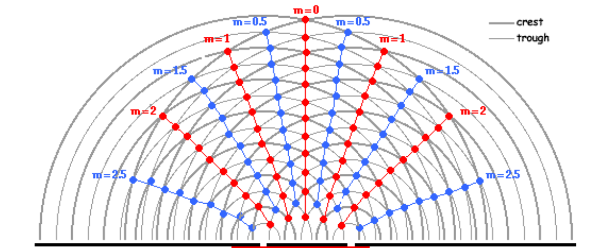
4. ทำนายผลต่างทางเดินจากมุมและตำแหน่งบนฉาก

เมื่อ P อยู่ไกลมากเทียบกับ \(d=S_1S_2\) แนวเดินทางจากสองแหล่งเกือบขนานกัน ลาก \(S_2H\) ตั้งฉากกับแนว \(S_1P\) แล้วช่วงที่ทางเดินต่างกันจะประมาณได้ด้วย \(S_1H\) มุมที่ \(S_2\) ในสามเหลี่ยมมุมฉากนี้คือ \(\theta\)
รู้ d และ θ: ทำนายผลต่างทางเดิน Δr ในกรณีระยะไกลอย่างไร?
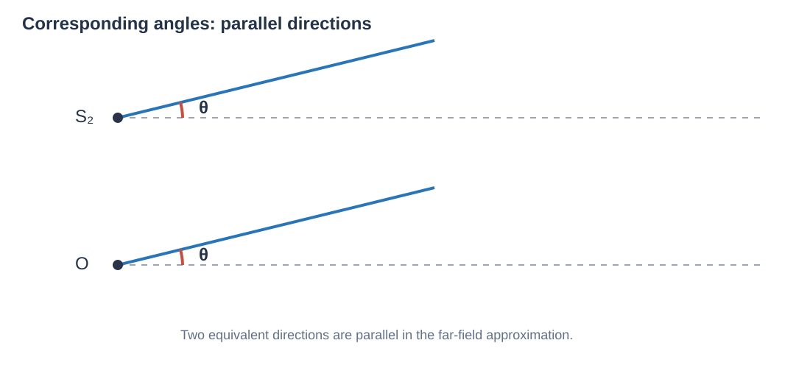
เมื่อแนวเดินทางเกือบขนานกัน ใช้ \(\theta\) ที่จุดกึ่งกลาง O ได้ โดยวัดจากแนวกลางถึง \(OP\) กำหนด \(L=OM\) เป็นระยะตั้งฉากถึงฉาก และ \(x=MP\) เป็นระยะจากกึ่งกลางฉากถึง P
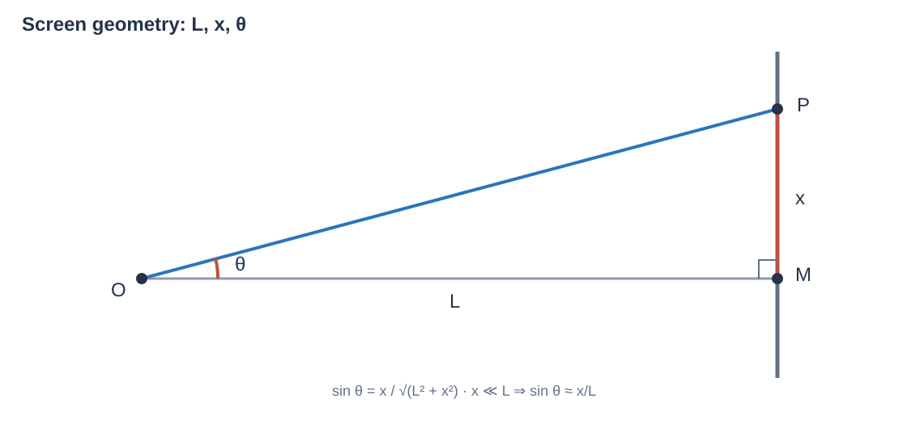
รู้ d, L และ x: ทำนาย Δr จากตำแหน่งบนฉากอย่างไร?
เพิ่มเงื่อนไข x เล็กกว่า L มาก: สูตรย่อเป็นอะไร?
5. สูตรผลต่างทางเดิน: เฟสตรงกันและเฟสตรงข้าม
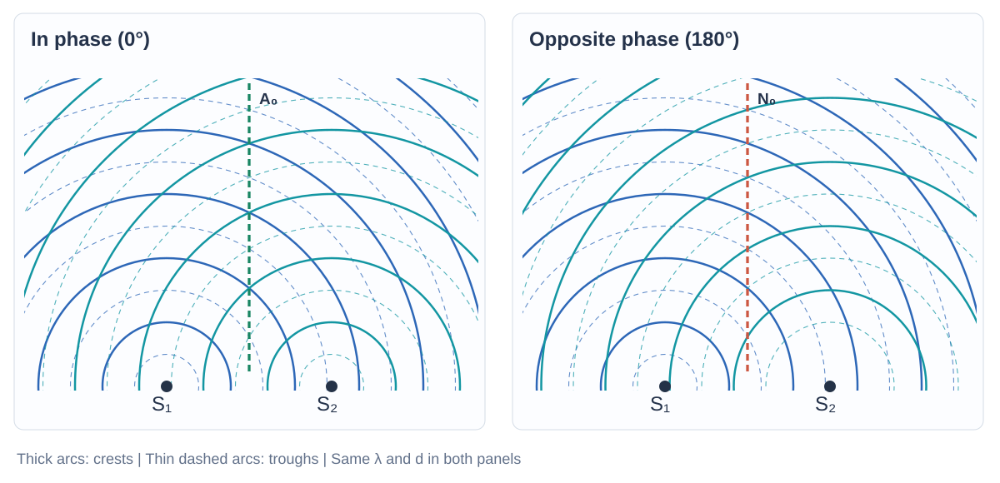
แหล่งอาพันธ์มีความถี่เท่ากันและผลต่างเฟสเริ่มต้นคงที่ ผลต่างทางเดิน \(\Delta r\) ทำให้เฟสต่างเพิ่มจากการเดินทาง \(2\pi\Delta r/\lambda\) เรเดียน หรือ \(360^\circ\Delta r/\lambda\) ตัวอย่างเช่น \(\Delta r=\lambda/2\) ทำให้เฟสต่างจากการเดินทาง \(180^\circ\)
บัพหักล้างสนิทเมื่อแอมพลิจูดของคลื่นที่มาถึงเท่ากัน
กรณีที่ 1 — แหล่งกำเนิดเฟสตรงกัน: สูตรแนวปฏิบัพและแนวบัพคืออะไร?
ปฏิบัพ: \(\Delta r=n\lambda\) โดย \(n=0,1,2,\ldots\)
บัพ: \(\Delta r=(n-\tfrac{1}{2})\lambda\) โดย \(n=1,2,3,\ldots\)
แนวกลางเป็นปฏิบัพ เพราะ \(\Delta r=0\) และคลื่นยังเฟสตรงกัน
กรณีที่ 2 — แหล่งกำเนิดเฟสตรงข้าม: สูตรแนวปฏิบัพและแนวบัพคืออะไร?
ปฏิบัพ: \(\Delta r=(n-\tfrac{1}{2})\lambda\) โดย \(n=1,2,3,\ldots\)
บัพ: \(\Delta r=n\lambda\) โดย \(n=0,1,2,\ldots\)
แนวกลางเป็นบัพ เพราะ \(\Delta r=0\) และคลื่นยังต่างเฟส \(180^\circ\) จากแหล่งกำเนิด
6. ฝึกอธิบายการซ้อนทับและอ่านรูป
ข้อ 1. แหล่งกำเนิดสองแหล่งส่งคลื่นผ่านตัวกลางเดียวกัน เมื่อคลื่นทั้งสองมาถึงบริเวณเดียวกัน การกระจัดของตัวกลางเป็นอย่างไร และเราเรียกปรากฏการณ์นี้ว่าอะไร?
เกิดการซ้อนทับหรือการแทรกสอดของคลื่น (wave interference) ตามหลักการบวกการกระจัด
ข้อ 2. ในถาดคลื่น ปุ่มกำเนิดสองปุ่มสร้างคลื่นผิวน้ำพร้อมกัน เมื่อฉายแสงให้เห็นลวดลายบนฉาก ทำไมบางบริเวณจึงเป็นแถบมืด?
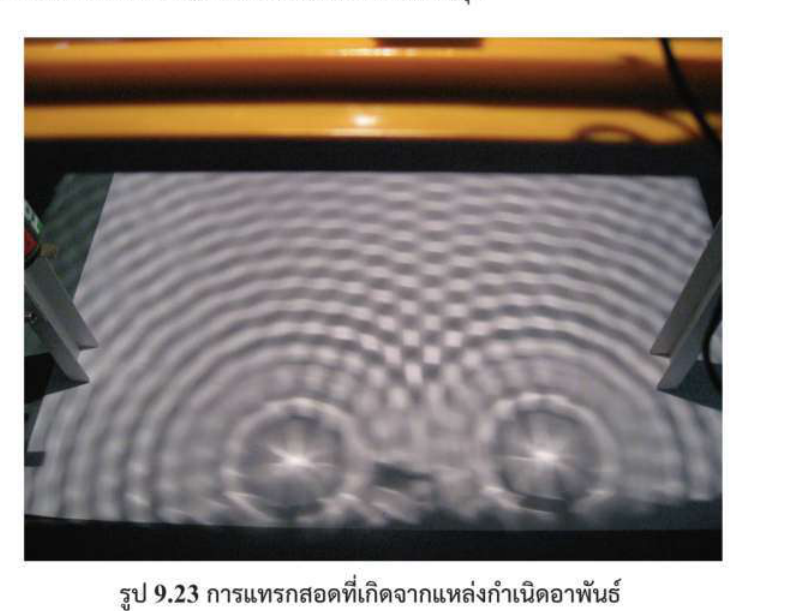
บริเวณแถบมืดเป็นตำแหน่งที่คลื่นหักล้างกัน โดยคลื่นจากสองแหล่งมีการกระจัดตรงข้ามกันเมื่อมาถึง ทำให้ความแปรผันของระดับผิวน้ำน้อย
ข้อ 3. ดูรูป 9.24 แหล่งกำเนิดทั้งสองสั่นเฟสตรงกัน ที่จุด E และจุด F คลื่นเดินทางจากสองแหล่งต่างกันกี่ความยาวคลื่น? ระบุว่าที่แต่ละจุดคลื่นเสริมหรือหักล้างกัน
E อ่านจากรูปได้ \(S_1E=3\lambda\) และ \(S_2E=2.5\lambda\) ดังนั้น \(\Delta r=0.5\lambda\) สันคลื่นเจอท้องคลื่น จึงหักล้างและเป็นบัพอันดับแรก
F อ่านได้ \(S_1F=3.5\lambda\) และ \(S_2F=5.5\lambda\) ดังนั้น \(\Delta r=2\lambda\) ท้องคลื่นเจอท้องคลื่น จึงเสริมและเป็นปฏิบัพอันดับสอง
ข้อ 4. ที่จุดหนึ่ง คลื่นสองขบวนมาถึงโดยสันของคลื่นแรกไม่ได้ซ้อนกับสันหรือท้องของอีกขบวนพอดี การแทรกสอดที่จุดนั้นเป็นอย่างไร?
คลื่นยังซ้อนทับตามหลักการบวกการกระจัด แต่การเสริมหรือหักล้างเกิดเพียงบางส่วน ขึ้นอยู่กับผลต่างเฟสที่จุดนั้น
ข้อ 5. เดิมแหล่งกำเนิดสองแหล่งสั่นพร้อมกัน ถ้าปรับให้แหล่งหนึ่งสั่นนำอีกแหล่ง 180° ผลต่างทางเดินที่ให้การเสริมและการหักล้างเปลี่ยนไปอย่างไร? อธิบายด้วยผลต่างเฟสของคลื่นที่มาถึง
เงื่อนไขสลับกัน: เสริมเมื่อ \(\Delta r=(n-\tfrac12)\lambda\) สำหรับ \(n=1,2,\dots\), หักล้างเมื่อ \(\Delta r=n\lambda\) สำหรับ \(n=0,1,\dots\). เพราะเฟสเริ่มต้นเพิ่มความต่างเฟส \(\pi\)
ข้อ 6. ในรูป 9.26 แหล่งกำเนิดอยู่ห่างกันสองความยาวคลื่น จงอธิบายว่าทำไมจึงหาแนวที่มีผลต่างทางเดินมากกว่า 2λ ไม่ได้
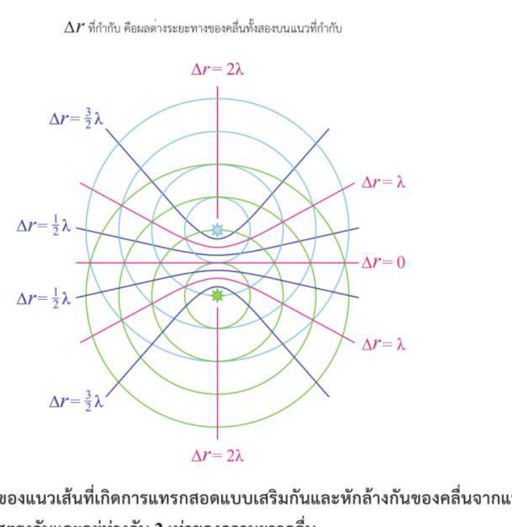
สำหรับระยะห่างแหล่งกำเนิด \(d=2\lambda\), อสมการสามเหลี่ยมให้ \(|S_1P-S_2P|\le d=2\lambda\). จึงไม่มีผลต่างทางเดินมากกว่านี้
ข้อ 7. แหล่งกำเนิดสองแหล่งสั่นต่างเฟสกัน 180° พิจารณาแนวกลางที่ทุกจุดอยู่ห่างจากสองแหล่งเท่ากัน แนวนี้เป็นแนวบัพหรือแนวปฏิบัพ? เพราะเหตุใด?
เป็นแนวบัพ เพราะ \(\Delta r=0\) แต่เฟสจากต้นกำเนิดต่างกัน \(\pi\) ทำให้การกระจัดหักล้างกัน (เมื่อแอมพลิจูดเท่ากัน)
ข้อ 8. คลื่นดลสองลูกเดินทางบนเชือกเส้นเดียวกันจากคนละด้าน เมื่อมาพบกัน ลูกหนึ่งจะสะท้อนกลับจากอีกลูกหรือไม่? อธิบายว่าเกิดอะไรขึ้นขณะซ้อนทับและหลังผ่านกัน
โดยประมาณในตัวกลางเชิงเส้น คลื่นแต่ละลูกเคลื่อนผ่านกันหลังจากซ้อนทับ โดยไม่สะท้อนจากอีกลูกหนึ่ง การกระจัดรวมระหว่างซ้อนทับเป็นผลรวมเชิงพีชคณิต
ข้อ 9. เมื่อคลื่นสองขบวนความถี่เท่ากันมาซ้อนทับที่จุดหนึ่ง คลื่นรวมจะมีแอมพลิจูดมากกว่าแอมพลิจูดของทั้งสองขบวนได้เมื่อใด?
เมื่อคลื่นเสริมกันมากพอ เช่น เมื่อเฟสตรงกัน จะได้แอมพลิจูดรวม \(A_1+A_2\) ซึ่งมากกว่าแอมพลิจูดของคลื่นแต่ละขบวน
ข้อ 10. เมื่อคลื่นสองขบวนความถี่เท่ากันมาซ้อนทับที่จุดหนึ่ง คลื่นรวมจะมีแอมพลิจูดน้อยกว่าแอมพลิจูดของทั้งสองขบวนได้เมื่อใด?
ต้องหักล้างกันมากพอ เช่น เมื่อเฟสตรงข้ามกัน แอมพลิจูดรวมคือ \(|A_1-A_2|\) ค่านี้น้อยกว่าแอมพลิจูดทั้งสองเมื่อแอมพลิจูดใหญ่มีค่าน้อยกว่าสองเท่าของแอมพลิจูดเล็ก
ข้อ 11. เมื่อคลื่นสองขบวนความถี่เท่ากันมาซ้อนทับที่จุดหนึ่ง แอมพลิจูดและเฟสของคลื่นทั้งสองต้องสัมพันธ์กันอย่างไรจึงทำให้แอมพลิจูดรวมเป็นศูนย์?
ต้องมีการกระจัดตรงข้ามทุกขณะและแอมพลิจูดเท่ากัน เช่น คลื่นเฟสต่าง 180° และ \(A_1=A_2\)
ข้อ 12. บางตำแหน่งคลื่นสองขบวนเสริมกันจนสั่นแรงขึ้น ขณะที่บางตำแหน่งคลื่นหักล้างจนแทบไม่สั่น แบบรูปนี้หมายความว่าพลังงานถูกสร้างขึ้นหรือหายไปหรือไม่? อธิบาย
ไม่ พลังงานรวมของระบบไม่ได้เกิดหรือสูญหายเพียงเพราะการซ้อนทับ แต่กระจายระหว่างบริเวณสั่นแรงและสั่นอ่อน
ข้อ 13. คลื่นสองขบวนในตัวกลางเดียวกันมีความถี่เท่ากัน แต่มีแอมพลิจูดต่างกัน ให้แอมพลิจูดของคลื่นทั้งสองเป็น A₁ และ A₂ คลื่นต้องต่างเฟสเท่าใดจึงให้แอมพลิจูดรวมมากที่สุดและน้อยที่สุด? แต่ละกรณีได้แอมพลิจูดรวมเท่าใด?
มากสุดเมื่อเฟสต่าง \(0^\circ\) (หรือ \(360^\circ k\)), ได้ \(A_\max=A_1+A_2\). น้อยสุดเมื่อเฟสต่าง \(180^\circ\) (หรือ \((2k+1)180^\circ\)), ได้ \(A_\min=|A_1-A_2|\)
ข้อ 14. ที่เวลาเริ่มต้น พัลส์สองลูกมีตำแหน่งและรูปร่างตามกราฟ ลูกซ้ายเคลื่อนไปทางขวา ลูกขวาเคลื่อนไปทางซ้าย ด้วยอัตราเร็วลูกละ 1.0 m/s ก. จากเวลาเริ่มต้นต้องรอเท่าใดจึงซ้อนทับพอดี?
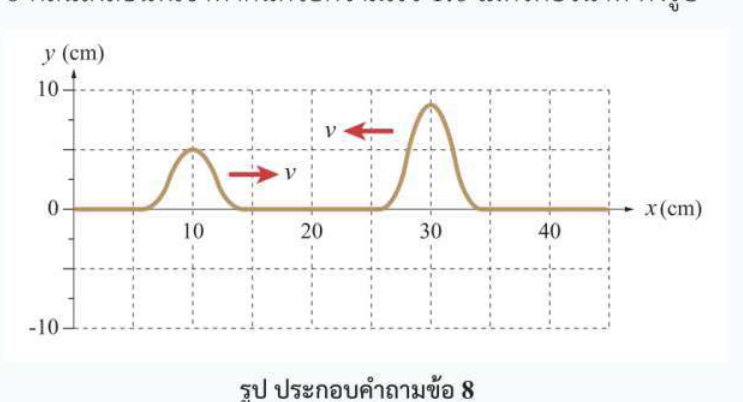
ยอดเริ่มที่ 10 และ 30 cm ห่างกัน 0.20 m อัตราเร็วที่เข้าใกล้กันคือ \(1.0+1.0=2.0\,\mathrm{m/s}\) จึงได้ \(t=0.20/2.0=0.10\,\mathrm{s}\).
ข. วาดกราฟการกระจัดรวมที่ 0.10 s และ 0.20 s
ที่ 0.10 s ยอดซ้อนกันที่ x = 20 cm อ่านจากกราฟได้ประมาณ +5 และ +9 cm จึงรวมประมาณ +14 cm ที่ 0.20 s พัลส์สูงอยู่ที่ x = 10 cm และพัลส์เตี้ยอยู่ที่ x = 30 cm โดยแต่ละลูกคงรูปร่างเดิม
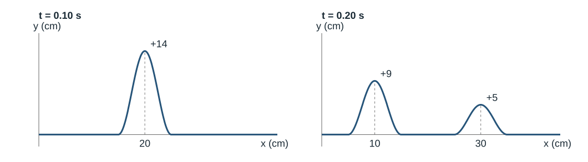
ข้อ 15. กราฟแสดงคลื่นดลสองลูกบนเชือกที่เวลาเริ่มต้น ลูกหนึ่งเป็นยอดและอีกลูกเป็นท้อง ทั้งสองเคลื่อนเข้าหากันด้วยอัตราเร็วเท่ากัน ก. ถ้าซ้อนทับพอดีที่เวลา 1.0 s คลื่นแต่ละลูกเคลื่อนที่เร็วเท่าใด?
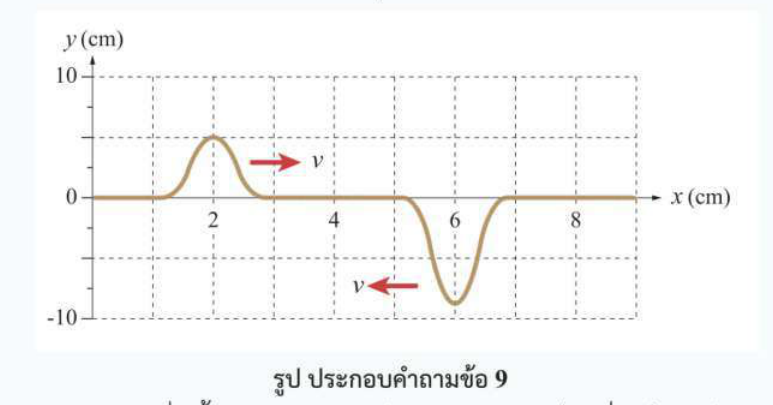
ยอดและท้องเริ่มที่ 2 และ 6 cm จึงห่างกัน 4 cm ใน 1 s แต่ละลูกเดินทาง 2 cm จึงได้ \(v=2\,\mathrm{cm/s}\).
ข. วาดกราฟการกระจัดรวมที่ 1 s และ 2 s
ที่ 1 s ยอดและท้องซ้อนที่ x = 4 cm อ่านได้ประมาณ +5 และ −9 cm จึงรวมประมาณ −4 cm ที่ 2 s ท้องอยู่ที่ x = 2 cm และยอดอยู่ที่ x = 6 cm โดยแต่ละลูกคงรูปร่างเดิม
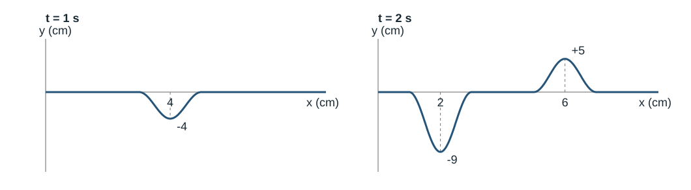
ข้อ 16. แหล่งกำเนิดในถาดคลื่นสั่น 50 ครั้งต่อวินาที ทำให้คลื่นผิวน้ำแผ่ออกด้วยอัตราเร็ว 1.0 m/s ตามแนวที่คลื่นเคลื่อนที่ จุดสองจุดที่อยู่ใกล้กันที่สุดและมีเฟสต่างกัน 180° จะห่างกันเท่าใด?
เริ่มจาก \(v=f\lambda\) → \(\lambda=v/f=1.0/50=0.020\,\mathrm{m}\). เฟสต่าง 180° ระยะใกล้สุด \(\Delta x=\lambda/2=0.010\,\mathrm{m}=1.0\,\mathrm{cm}\)
7. โจทย์คำนวณการแทรกสอด
ข้อ 17. คลื่นสองขบวนมีแอมพลิจูด ความถี่ และความยาวคลื่นเท่ากัน เมื่อทั้งสองมาซ้อนทับกันโดยเฟสตรงกัน แอมพลิจูดและความถี่ของคลื่นรวมจะเป็นเท่าใดเมื่อเทียบกับคลื่นแต่ละขบวน?
ก. แอมพลิจูดและความถี่เพิ่มเป็นสองเท่าทั้งคู่ · ข. แอมพลิจูดเท่าเดิม ความถี่เพิ่มเป็นสองเท่า · ค. แอมพลิจูดเพิ่มเป็นสองเท่า ความถี่เท่าเดิม · ง. แอมพลิจูดเป็นศูนย์ ความถี่เท่าเดิม
เมื่อคลื่นเหมือนกันมาถึงเฟสตรงกัน การกระจัดบวกกันได้แอมพลิจูด \(2A\) ส่วนความถี่เท่าเดิม
ข้อ 18. คลื่นสองขบวนที่มีแอมพลิจูดเท่ากันเดินทางมาถึงจุดเดียวกัน และสังเกตว่าการกระจัดรวมหักล้างกันสนิท ที่จุดนั้นคลื่นทั้งสองมาถึงด้วยเฟสต่างกันกี่องศา?
ก. ผลต่างทางเดินเป็นจำนวนเต็มเท่าของ λ · ข. ต่างเฟส 0° · ค. ต่างเฟส 180° · ง. ต่างเฟส 360°
เฟสต่างกัน \(180^\circ\) หรือเลขคี่เท่าของ \(180^\circ\) คลื่นที่มีแอมพลิจูดเท่ากันจึงหักล้างกันสนิท
ข้อ 19. แหล่งกำเนิดสองแหล่งสั่นเฟสตรงกันจนเกิดแบบรูปตามภาพ จุด P อยู่บนแนวปฏิบัพอันดับที่สอง ห่างจากแหล่งหนึ่ง 5 m และอีกแหล่ง 1 m ก. จงหาความยาวคลื่น
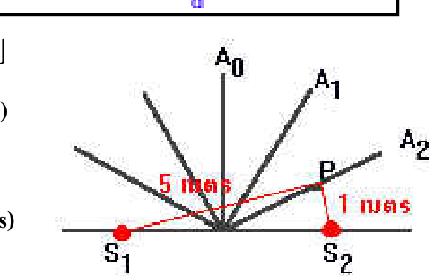
ใช้ \(\Delta r=2\lambda\) จัดรูปและแทนค่าได้ \(\lambda=|5-1|/2=2\,\mathrm{m}\).
ข. เมื่อความถี่เท่ากับ 100 Hz จงหาอัตราเร็ว
\(v=f\lambda=100(2)=200\,\mathrm{m/s}\).
ข้อ 20. แหล่งกำเนิดคลื่นสองแหล่งสั่นเฟสตรงกันและอยู่ห่างกัน 8 m เมื่อสังเกตที่ระยะไกล แนวปฏิบัพอันดับที่สองทำมุม 30° กับแนวกลาง ก. คลื่นมีความยาวคลื่นเท่าใด?
ใช้ \(d\sin\theta\approx2\lambda\) จัดรูปและแทนค่าได้ \(\lambda=d\sin30^\circ/2=8(0.5)/2=2\,\mathrm{m}\).
ข. เมื่ออัตราเร็วเท่ากับ 300 m/s จงหาความถี่
\(f=v/\lambda=300/2=150\,\mathrm{Hz}\).
ข้อ 21. แหล่งกำเนิดอาพันธ์สองแหล่งสั่นเฟสตรงกันและวางห่างกัน 6 cm คลื่นจากทั้งสองแหล่งมีความถี่ 20 Hz และเคลื่อนที่ด้วยอัตราเร็ว 40 cm/s เมื่อพิจารณาในระยะไกล แนวปฏิบัพอันดับที่สามเบนจากแนวกลางกี่องศา?
30° · 53° · 60° · 90°
เริ่ม \(v=f\lambda\) → \(\lambda=v/f=40/20=2\,\mathrm{cm}\). จาก \(d\sin\theta=n\lambda\), จัดรูป \(\sin\theta=3(2)/6=1\) → \(\theta=90^\circ\). หมายเหตุ เป็นทิศลิมิตของแนวในอุดมคติ ควรพิจารณาข้อจำกัดการประมาณระยะไกล
ข้อ 22. รูปแสดงคลื่นผิวน้ำจากแหล่งกำเนิด S₁ และ S₂ ที่สั่นเฟสตรงกัน จุด P อยู่บนแนวบัพ ห่างจาก S₁ 10 cm และจาก S₂ 7 cm ถ้าคลื่นเคลื่อนที่ด้วยอัตราเร็ว 30 cm/s ให้อ่านอันดับแนวบัพจากรูปแล้วหาความถี่ของแหล่งกำเนิด
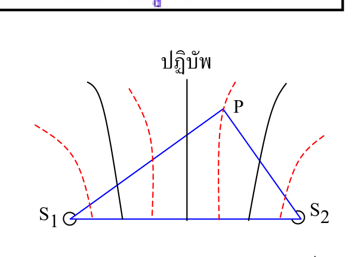
อ่านรูป P อยู่บน N₁ ก่อนใช้สูตร \(\Delta r=(n-\tfrac12)\lambda\). หาผลต่าง \(\Delta r=|10-7|=3\,\mathrm{cm}\); จัดรูป \(\lambda=\Delta r/(1-\tfrac12)=3/0.5=6\,\mathrm{cm}\). เริ่มจาก \(v=f\lambda\), จัดรูป \(f=v/\lambda=30/6=5\,\mathrm{Hz}\). ตอบ 5 Hz
ข้อ 23. แหล่งกำเนิดอาพันธ์ S₁ และ S₂ สั่นเฟสตรงกันและสร้างแบบรูปคลื่นผิวน้ำตามภาพ จุด P บนแนวบัพอยู่ห่างจาก S₁ 15 cm และจาก S₂ 5 cm คลื่นเคลื่อนที่ด้วยอัตราเร็ว 50 cm/s จงใช้อันดับแนวบัพจากรูปหาความถี่ของคลื่น
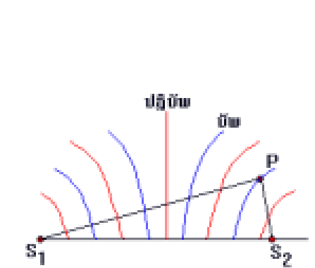
อ่านรูป P อยู่บน N₂. เริ่มจาก \(\Delta r=(n-\tfrac12)\lambda\), จัดรูป \(\lambda=\Delta r/(2-\tfrac12)=|15-5|/1.5=6.667\,\mathrm{cm}\). จาก \(v=f\lambda\), \(f=v/\lambda=50/6.667=7.50\,\mathrm{Hz}\). ตอบ 7.50 Hz
ข้อ 24. แหล่งกำเนิด S₁ และ S₂ อยู่ห่างกัน 8.0 cm ทั้งสองสั่นพร้อมกันด้วยความถี่เดียวกันและให้คลื่นความยาว 4.0 cm บนเส้นตรงช่วงระหว่างแหล่งกำเนิดทั้งสองมีจุดบัพกี่จุด?
บนช่วงระหว่างแหล่ง \(|\Delta r|<8\). บัพต้อง \(|\Delta r|=(n-\tfrac12)4=2,6,\dots\,\mathrm{cm}\) จึงมีค่า 2 และ 6 แต่ละค่ามีซ้าย–ขวา รวม 4 จุด
ข้อ 25. แหล่งกำเนิดคลื่นน้ำสองแหล่งอยู่ห่างกัน 16 cm และให้คลื่นเฟสตรงกันที่มีความยาวคลื่น 4 cm บนเส้นตรงที่เชื่อมแหล่งทั้งสองมีจุดปฏิบัพกี่จุดเมื่อไม่นับตำแหน่งของตัวแหล่งกำเนิด? ถ้านับปลายทั้งสองตามสมการด้วย จะได้กี่จุด?
ระหว่างแหล่งกำเนิดแบบไม่รวมปลายมี \(\Delta r\lt16\,\mathrm{cm}\) อันดับที่เป็นไปได้คือ \(n=0,1,2,3\) จึงได้ \(1+2(3)=7\) จุด ค่าตามเฉลยต้นฉบับ 9 จะเกิดเมื่อใส่ตำแหน่งปลายทั้งสองเพิ่มตามสมการ แต่ตำแหน่งตัวแหล่งกำเนิดอยู่นอกช่วงที่โจทย์ฉบับนี้ให้นับ
ข้อ 26. แหล่งกำเนิดคลื่นน้ำสองแหล่งอยู่ห่างกัน 10 cm สั่นเฟสตรงกันและสร้างหน้าคลื่นวงกลมที่มีความยาวคลื่น 2 cm จุด P อยู่ห่างจากแหล่งแรก 10 cm และจากแหล่งที่สอง 19 cm จุด P อยู่บนแนวบัพหรือแนวปฏิบัพอันดับใดเมื่อนับจากแนวกลาง?
ก. ปฏิบัพอันดับ 4 · ข. บัพอันดับ 4 · ค. ปฏิบัพอันดับ 5 · ง. บัพอันดับ 5
เริ่ม \(\Delta r=|19-10|=9\,\mathrm{cm}\). จากแนวบัพ \(\Delta r=(n-\tfrac12)\lambda\), จัดรูป \(n=\Delta r/\lambda+\tfrac12=9/2+1/2=5\). ตอบ แนวบัพที่ 5
ข้อ 27. แหล่งกำเนิดคลื่นสองแหล่งสั่นเฟสตรงกันตามภาพ จุด P อยู่บนแนวปฏิบัพอันดับที่สอง โดยอยู่ห่างจากสองแหล่งเป็นระยะ 5 m และ 1 m ก. จงหาความยาวคลื่น
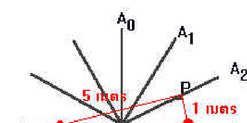
ใช้ \(\Delta r=2\lambda\) จัดรูปและแทนค่าได้ \(\lambda=|5-1|/2=2\,\mathrm{m}\).
ข. เมื่อความถี่เท่ากับ 150 Hz จงหาอัตราเร็ว
\(v=f\lambda=150(2)=300\,\mathrm{m/s}\).
ข้อ 28. แหล่งกำเนิดสองแหล่งอยู่ห่างกัน 10 m และปล่อยคลื่นเฟสตรงกัน ในระยะไกลเห็นแนวปฏิบัพอันดับที่สองเอียงจากแนวกลาง 30° ก. จงหาความยาวคลื่น
ใช้ \(d\sin\theta\approx2\lambda\) จัดรูปและแทนค่าได้ \(\lambda=d\sin30^\circ/2=10(0.5)/2=2.5\,\mathrm{m}\).
ข. เมื่ออัตราเร็วเท่ากับ 100 m/s จงหาความถี่
\(f=v/\lambda=100/2.5=40\,\mathrm{Hz}\).
ข้อ 29. แหล่งกำเนิดอาพันธ์สองแหล่งที่เฟสตรงกันวางห่างกัน 6 cm คลื่นที่ปล่อยออกมามีความถี่ 20 Hz และเคลื่อนที่ด้วยอัตราเร็ว 40 cm/s ในระยะไกล แนวปฏิบัพอันดับที่สามทำมุมเท่าใดกับแนวกลาง?
30° · 53° · 60° · 90°
เริ่ม \(\lambda=v/f=40/20=2\,\mathrm{cm}\). จาก \(d\sin\theta=3\lambda\) → \(\sin\theta=6/6=1\), \(\theta=90^\circ\). เป็นกรณีขอบเขตของแบบจำลองระยะไกล
ข้อ 30. แหล่งกำเนิด S₁ และ S₂ สั่นเฟสตรงกันจนเกิดการแทรกสอดของคลื่นผิวน้ำดังรูป จุด P บนแนวบัพอยู่ห่างจาก S₁ 10 cm และจาก S₂ 6 cm ถ้าคลื่นเคลื่อนที่ด้วยอัตราเร็ว 32 cm/s ให้อ่านอันดับแนวบัพจากรูปแล้วหาความถี่
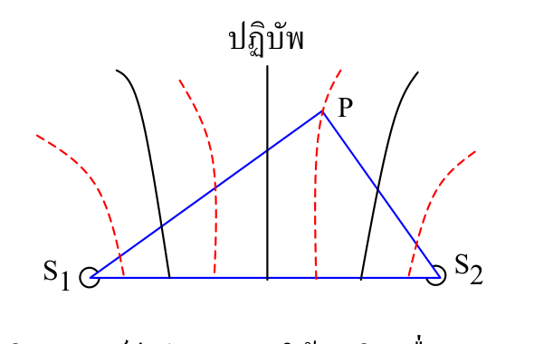
จากรูป P อยู่ N₁. ใช้ \(\Delta r=(n-\tfrac12)\lambda\); \(\Delta r=|10-6|=4\,\mathrm{cm}\), จัดรูป \(\lambda=4/0.5=8\,\mathrm{cm}\). ใช้ \(v=f\lambda\) → \(f=32/8=4\,\mathrm{Hz}\). ตอบที่ถูกต้อง 4 Hz; เฉลยต้นฉบับ 5 Hz ไม่ตรงข้อมูล
ข้อ 31. แหล่งกำเนิด S₁ และ S₂ สั่นเฟสตรงกัน ให้คลื่นความยาว 3 cm จุด A อยู่บนแนวบัพเส้นแรกถัดจากแนวกลางและห่างจาก S₁ 6 cm ระยะจาก S₂ ถึง A ตรงกับตัวเลือกใด?
1.5 cm · 3.0 cm · 4.5 cm · 6.0 cm
เริ่ม \(\Delta r=(1-\tfrac12)\lambda=1.5\,\mathrm{cm}\). จึง \(|6-S_2A|=1.5\) → \(S_2A=4.5\) หรือ \(7.5\,\mathrm{cm}\). จากตัวเลือกตอบ 4.5 cm แต่หากไม่มีตัวเลือกและข้อจำกัดตำแหน่งจะได้สองคำตอบ
ข้อ 32. แหล่งกำเนิดคลื่นน้ำสองแหล่งอยู่ห่างกัน 8 cm และให้คลื่นเฟสตรงกันที่มีความยาวคลื่น 2 cm ระหว่างแหล่งทั้งสองมีจุดปฏิบัพกี่จุดบนเส้นตรงที่เชื่อมแหล่งกำเนิด? ไม่นับตำแหน่งของตัวแหล่งกำเนิด
6 · 7 · 8 · 9
เมื่อกำหนดให้แหล่งกำเนิดเฟสตรงกัน ใช้ \(\Delta r=n\lambda\) โดย \(\Delta r\lt8\,\mathrm{cm}\) จึงได้ \(n=0,1,2,3\) มีจุดกึ่งกลางหนึ่งจุดและจุดสมมาตรสามคู่ รวม \(1+2(3)=7\) จุด
ข้อ 33. แหล่งกำเนิดคลื่นน้ำ S₁ และ S₂ อยู่ห่างกัน 18 cm ทั้งสองให้คลื่นเฟสตรงกันและมีแอมพลิจูดเท่ากัน คลื่นมีความยาวคลื่น 4 cm มีแนวบัพกี่แนวตัดเส้นตรงช่วงระหว่างแหล่งกำเนิด โดยไม่นับปลายทั้งสอง?
4 · 5 · 8 · 9
\(\Delta r=(n-\tfrac12)\lambda=2,6,10,14,18,\dots\,\mathrm{cm}\). ในช่วงเปิด \(\Delta r<18\) มี 4 ค่า แต่ละค่า 2 จุด รวม \(2\times4=8\). ตอบ 8
ข้อ 34. แหล่งกำเนิดอาพันธ์สองแหล่งสั่นเฟสตรงข้ามและอยู่ห่างกัน 12 cm ทั้งสองให้คลื่นความยาว 3 cm บนเส้นตรงช่วงระหว่างแหล่งกำเนิดมีจุดบัพกี่จุดเมื่อไม่นับตัวแหล่งกำเนิด?
5 · 6 · 7 · 8
เฟสตรงข้าม: บัพเมื่อ \(\Delta r=n\lambda\). บนช่วงเปิด \(0\le\Delta r<12\), ได้ \(n=0,1,2,3\), จึงมีจุดกลาง 1 จุด และคู่สมมาตร 3 คู่: \(1+2(3)=7\) จุด. ตอบ 7
ข้อ 35. แหล่งกำเนิด S₁ และ S₂ สั่นเฟสตรงกันและห่างกันสองความยาวคลื่นครึ่ง จงนับจุดบัพบนเส้นเชื่อมสองแหล่งเมื่อไม่นับตัวแหล่งกำเนิด แล้วเปรียบเทียบกับการนับปลายทั้งสองตามสมการ
ผลต่างทางเดินของบัพที่เป็นไปได้คือ \(0.5\lambda\), \(1.5\lambda\) และ \(2.5\lambda\) สองค่าแรกให้บัพภายในอย่างละสองจุด รวม 4 จุด ค่า \(2.5\lambda=d\) อยู่ที่ปลายทั้งสอง การนับปลายเพิ่มให้ 6 ตามเฉลยต้นฉบับ
8. ฝึกเลือกสูตรจากมุม ตำแหน่ง และเฟส
ข้อ 36. แหล่งกำเนิดสองแหล่งที่สั่นเฟสตรงกันอยู่ห่างกัน 0.80 m และให้คลื่นความยาว 0.20 m ในบริเวณที่อยู่ไกลจากแหล่งกำเนิด แนวปฏิบัพอันดับที่สองทำมุมกี่องศากับแนวกลาง?
เริ่ม \(d\sin\theta=n\lambda\) → \(\sin\theta=n\lambda/d\). แทนค่า \(\sin\theta=2(0.20)/0.80=0.50\) → \(\theta=30^\circ\). ตอบ 30°
ข้อ 37. แหล่งกำเนิดคลื่นสองแหล่งห่างกัน 0.10 m วางฉากให้กึ่งกลางฉากอยู่บนแนวกลาง ห่างจากกึ่งกลางระหว่างแหล่ง 4.0 m จุด P อยู่เหนือกึ่งกลางฉาก 0.30 m จงประมาณผลต่างทางเดินที่ P จากค่า sin θ ในสามเหลี่ยม แล้วเปรียบเทียบกับคำตอบที่ได้จากการประมาณมุมเล็ก
เริ่ม \(\Delta r\approx d\sin\theta\), จากสามเหลี่ยม \(\sin\theta=x/\sqrt{L^2+x^2}\). แทนค่า \(\Delta r\approx0.10(0.30)/\sqrt{4.0^2+0.30^2}=0.007479\,\mathrm{m}\). เมื่อ \(x\ll L\), \(\Delta r\approx dx/L=0.10(0.30)/4.0=0.00750\,\mathrm{m}\). ตอบ ประมาณ 7.48 mm และ 7.50 mm
ข้อ 38. แหล่งกำเนิดอาพันธ์สองแหล่งสั่นเฟสตรงข้าม อยู่ห่างกัน 12 cm และสร้างคลื่นความยาว 3 cm บนเส้นตรงช่วงระหว่างแหล่งกำเนิดมีจุดบัพและจุดปฏิบัพอย่างละกี่จุด? ไม่นับตำแหน่งของตัวแหล่งกำเนิด
บัพ: \(\Delta r=n\lambda\), \(n=0,1,2,3\), จำนวน \(1+2(3)=7\). ปฏิบัพ: \(\Delta r=(n-\tfrac12)\lambda\), \(n=1,2,3,4\), จำนวน \(2(4)=8\). ตอบ บัพ 7 จุด ปฏิบัพ 8 จุด
Physics · Chapter 9 Waves · Y12
9.4.3 Wave Interference
Opening question → observation → deriving conditions → geometry → opposite phase → interference practice
Study the ideas in sections 1–5. Try the question above each box, then press + to check your answer. Choose practice from sections 6–8.
1. When waves meet
Opening question: What happens to the water surface where two waves overlap?
2. What are nodes and antinodes?
When two water waves overlap, consider how the displacement at a fixed point changes over time.
What is a node?
What is an antinode?
3. From the water-wave pattern to path difference
In Fig. 9.24, thick curves are crests and thin curves are troughs. Trace one wavefront from each source to the same point.
Observation: Which wavefronts meet at A, B, C, E and F?
A crest–crest · B, F trough–trough · C, E crest–trough
From the figure: Which of A, B, C, E and F lie on nodal or antinodal lines?
A, B, F are on antinodal lines. The waves arrive in phase and reinforce.
C, E are on nodal lines. A crest meets a trough, and equal arriving amplitudes cancel completely.
Count outward from each source. Adjacent crests are \(\lambda\) apart and the next trough is \(\lambda/2\) away. At P, find the path difference \(\Delta r=|S_1P-S_2P|\).
Point A — Count wavelengths from S₁ and S₂, then find Δr
Point B — Count wavelengths from S₁ and S₂, then find Δr
Point C — Count wavelengths from S₁ and S₂, then find Δr
Point E — Count wavelengths from S₁ and S₂, then find Δr
Point F — Count wavelengths from S₁ and S₂, then find Δr
Summary: How do the path differences for nodal and antinodal lines differ?
4. Predicting path difference from the angle and screen position
When P is far compared with \(d=S_1S_2\), the two paths are nearly parallel. Drop \(S_2H\) perpendicular to \(S_1P\). The path difference is approximately \(S_1H\). The angle at \(S_2\) in this right triangle is \(\theta\).
Given d and θ, how do we predict the far-field path difference?
With the paths nearly parallel, measure \(\theta\) from the central axis to \(OP\), where O is the midpoint of the sources. Let \(L=OM\) be the perpendicular distance to the screen and \(x=MP\) the distance from the screen centre to P.
Given d, L and x, how do we predict the path difference on the screen?
With the additional condition x much smaller than L, how does the formula simplify?
5. Comparing path-difference conditions for two source phases
Coherent sources have the same frequency and a constant initial phase difference. Travel over a path difference \(\Delta r\) contributes a phase difference of \(2\pi\Delta r/\lambda\) radians, or \(360^\circ\Delta r/\lambda\). A path difference of \(\lambda/2\) contributes \(180^\circ\).
Complete cancellation at a node requires equal arriving amplitudes.
Case 1 — In-phase sources: What are the antinodal and nodal conditions?
Antinode: \(\Delta r=n\lambda\) for \(n=0,1,2,\ldots\)
Node: \(\Delta r=(n-\tfrac{1}{2})\lambda\) for \(n=1,2,3,\ldots\)
The centreline is antinodal because \(\Delta r=0\) and the waves arrive in phase.
Case 2 — Opposite-phase sources: What are the antinodal and nodal conditions?
Antinode: \(\Delta r=(n-\tfrac{1}{2})\lambda\) for \(n=1,2,3,\ldots\)
Node: \(\Delta r=n\lambda\) for \(n=0,1,2,\ldots\)
The centreline is nodal because \(\Delta r=0\) and the waves retain the \(180^\circ\) phase offset from the sources.
6. Explain superposition and read wave patterns
Question 1. Two sources send waves through the same medium. What is the displacement of the medium where the waves overlap, and what is this phenomenon called?
Superposition, or wave interference, occurs: local displacements combine algebraically.
Question 2. Two dippers generate water waves together in a ripple tank. When light projects the pattern onto a screen, why do dark bands appear?
Dark bands mark destructive interference, where opposite displacements largely cancel and the surface oscillation is weak.
Question 3. In Fig. 9.24 the two sources oscillate in phase. At E and F, how many wavelengths differ between the two paths? State whether the waves reinforce or cancel at each point.
E has \(S_1E=3\lambda\) and \(S_2E=2.5\lambda\). Thus \(\Delta r=0.5\lambda\): a crest meets a trough at the first nodal line.
F has \(S_1F=3.5\lambda\) and \(S_2F=5.5\lambda\). Thus \(\Delta r=2\lambda\): two troughs reinforce at the second antinodal line.
Question 4. At one point, a crest of the first wave meets neither an exact crest nor an exact trough of the second. What kind of interference occurs there?
Displacements still add algebraically, but the constructive or destructive effect is partial, depending on the local phase difference.
Question 5. Two sources initially oscillate in phase. If one is shifted by 180°, how do the path-difference conditions for reinforcement and cancellation change? Explain using the phase of the arriving waves.
The conditions swap: constructive at \(\Delta r=(n-\tfrac12)\lambda\) for \(n\ge1\), destructive at \(\Delta r=n\lambda\) for \(n\ge0\). The initial phase offset contributes an extra \(\pi\).
Question 6. In Fig. 9.26 the sources are two wavelengths apart. Explain why no line can have a path difference greater than 2λ.
The triangle inequality gives \(|S_1P-S_2P|\le d\). Here \(d=2\lambda\), so a larger path difference is impossible.
Question 7. Two sources oscillate 180° out of phase. Consider the centreline, where every point is equidistant from the two sources. Is it nodal or antinodal? Explain.
It is a nodal line: \(\Delta r=0\), yet the sources differ by \(\pi\) in phase, causing cancellation for equal amplitudes.
Question 8. Two pulses travel along the same string toward each other. Will one reflect off the other? Explain what happens during and after overlap.
In a linear medium, each pulse passes through the other; they do not reflect off one another. During overlap, displacements add algebraically.
Question 9. Two waves of equal frequency overlap at a point. Under what conditions can their resultant amplitude exceed both individual amplitudes?
If reinforcement is strong enough, the resultant exceeds both individual amplitudes. For example, in-phase waves give \(A_1+A_2\).
Question 10. Two waves of equal frequency overlap at a point. Under what conditions can their resultant amplitude be smaller than both individual amplitudes?
Destructive interference must be strong enough. For opposite phases, the resultant is \(|A_1-A_2|\). It is below both individual amplitudes when the larger amplitude is less than twice the smaller one.
Question 11. Two waves of equal frequency overlap at a point. How must their amplitudes and phases be related for the resultant amplitude to be zero?
The waves must be exactly out of phase and have equal amplitudes, so their displacements cancel at every instant.
Question 12. Two waves reinforce at some positions and cancel at others. Does the stronger or weaker motion mean that energy is created or destroyed? Explain.
No. Superposition does not create or destroy total energy; interference redistributes energy between stronger and weaker regions.
Question 13. Two waves in the same medium have equal frequencies but different amplitudes, A₁ and A₂. What phase difference gives the greatest resultant amplitude? What phase difference gives the least? Find both amplitudes.
Maximum: phase difference \(0^\circ\pmod{360^\circ}\), amplitude \(A_1+A_2\). Minimum: \(180^\circ\pmod{360^\circ}\), amplitude \(|A_1-A_2|\).
Question 14. At the start, the two pulses have the positions and shapes shown. The left pulse moves right and the right pulse moves left, each at 1.0 m/s. (a) How long after the start do they overlap exactly?
The crests start at 10 and 30 cm, 0.20 m apart. The closing speed is \(1.0+1.0=2.0\,\mathrm{m/s}\), so \(t=0.20/2.0=0.10\,\mathrm{s}\).
(b) Sketch the resultant at 0.10 s and 0.20 s.
At 0.10 s the crests coincide at x = 20 cm. The plotted heights are about +5 and +9 cm, so the sum is about +14 cm. At 0.20 s the taller pulse is at x = 10 cm and the shorter pulse is at x = 30 cm, each with its original shape.
Question 15. The graph shows a crest pulse and a trough pulse on a string at the start. They approach at the same speed. (a) If they overlap exactly at 1.0 s, what is the speed of each pulse?
The crest and trough start at 2 and 6 cm, 4 cm apart. Each travels 2 cm in 1 s, so \(v=2\,\mathrm{cm/s}\).
(b) Sketch the resultant at 1 s and 2 s.
At 1 s the crest and trough coincide at x = 4 cm. The graph gives about +5 and −9 cm, so the displacement is about −4 cm. At 2 s the trough is at x = 2 cm and the crest is at x = 6 cm, each with its original shape.
Question 16. A source in a ripple tank oscillates 50 times per second, sending water waves out at 1.0 m/s. Along the direction of travel, how far apart are the nearest two points whose phases differ by 180°?
From \(v=f\lambda\), rearrange \(\lambda=v/f=0.020\,\mathrm{m}\). Half-cycle spacing is \(\lambda/2=0.010\,\mathrm{m}=1.0\,\mathrm{cm}\).
7. Interference calculations
Question 17. Two waves have the same amplitude, frequency and wavelength. They arrive in phase at a point. How do the amplitude and frequency of the resultant compare with those of either individual wave?
A. Both double · B. Amplitude is unchanged, frequency doubles · C. Amplitude doubles, frequency is unchanged · D. Amplitude is zero, frequency is unchanged
The in-phase displacements add to give amplitude \(2A\); the frequency stays the same.
Question 18. Two waves of equal amplitude reach the same point and cancel completely. What is their phase difference in degrees at that point?
A. A whole-wavelength path difference · B. 0° · C. 180° · D. 360°
The phase difference is \(180^\circ\) modulo \(360^\circ\). Equal-amplitude waves then cancel completely.
Question 19. Two in-phase sources produce the pattern shown. Point P lies on the second antinodal line, 5 m from one source and 1 m from the other. (a) Find the wavelength.
Use \(\Delta r=2\lambda\), then rearrange and substitute to obtain \(\lambda=|5-1|/2=2\,\mathrm{m}\).
(b) If the frequency is 100 Hz, find the speed.
\(v=f\lambda=100(2)=200\,\mathrm{m/s}\).
Question 20. Two in-phase sources are 8 m apart. Far from the sources, the second antinodal line is at 30° to the centreline. (a) What is the wavelength?
Use \(d\sin\theta\approx2\lambda\), then rearrange and substitute to obtain \(\lambda=d\sin30^\circ/2=8(0.5)/2=2\,\mathrm{m}\).
(b) If the wave speed is 300 m/s, find the frequency.
\(f=v/\lambda=300/2=150\,\mathrm{Hz}\).
Question 21. Two coherent sources oscillate in phase and are 6 cm apart. The waves have frequency 20 Hz and travel at 40 cm/s. In the far field, what angle does the third antinodal line make with the centreline?
30° · 53° · 60° · 90°
From \(v=f\lambda\), \(\lambda=40/20=2\,\mathrm{cm}\). With \(d\sin\theta=n\lambda\), \(\sin\theta=3(2)/6=1\); hence \(\theta=90^\circ\). Caveat: this is a limiting direction in the far-field idealization.
Question 22. The diagram shows water waves from in-phase sources S₁ and S₂. Point P is on a nodal line, 10 cm from S₁ and 7 cm from S₂. The waves travel at 30 cm/s. Read the nodal order from the diagram and find the source frequency.
The diagram identifies N₁. From \(\Delta r=(n-\tfrac12)\lambda\), \(\lambda=|10-7|/0.5=6\,\mathrm{cm}\). Then \(f=v/\lambda=30/6=5\,\mathrm{Hz}\). Answer: 5 Hz.
Question 23. Coherent sources S₁ and S₂ oscillate in phase, producing the water-wave pattern shown. Point P lies on a nodal line, 15 cm from S₁ and 5 cm from S₂. The waves travel at 50 cm/s. Use the nodal order shown to find the frequency.
P lies on N₂. \(\lambda=|15-5|/(2-\tfrac12)=6.667\,\mathrm{cm}\). Hence \(f=v/\lambda=50/6.667=7.50\,\mathrm{Hz}\). Answer: 7.50 Hz.
Question 24. Sources S₁ and S₂ are 8.0 cm apart. They oscillate together at the same frequency and produce waves of wavelength 4.0 cm. How many nodes lie on the straight segment between the two sources?
Inside the open segment, \(|\Delta r|<8\,\mathrm{cm}\). Nodal differences are 2 and 6 cm, giving two symmetric positions each, 4 nodes.
Question 25. Two in-phase water-wave sources are 16 cm apart and emit waves of wavelength 4 cm. How many antinodal intersections lie on the line segment excluding the sources? How many would the equation give if the endpoints were included?
Strictly between the sources, \(\Delta r\lt16\,\mathrm{cm}\). Orders \(n=0,1,2,3\) give \(1+2(3)=7\) points. The printed value 9 can be reproduced by including the two endpoints formally, outside the interval specified here.
Question 26. Two in-phase water-wave sources 10 cm apart produce circular wavefronts of wavelength 2 cm. Point P is 10 cm from the first source and 19 cm from the second. Is P on a nodal or antinodal line, and what is its order from the centreline?
A. Fourth antinode · B. Fourth node · C. Fifth antinode · D. Fifth node
Compute \(\Delta r=9\,\mathrm{cm}\). For a node, \(n=\Delta r/\lambda+\tfrac12=9/2+1/2=5\). Answer: fifth nodal line.
Question 27. Two wave sources oscillate in phase, as shown. Point P is on the second antinodal line and is 5 m and 1 m from the sources. (a) Find the wavelength.
Use \(\Delta r=2\lambda\), then rearrange and substitute to obtain \(\lambda=|5-1|/2=2\,\mathrm{m}\).
(b) If the frequency is 150 Hz, find the speed.
\(v=f\lambda=150(2)=300\,\mathrm{m/s}\).
Question 28. Two in-phase wave sources are 10 m apart. In the far field the second antinodal line makes a 30° angle with the centreline. (a) Find the wavelength.
Use \(d\sin\theta\approx2\lambda\), then rearrange and substitute to obtain \(\lambda=d\sin30^\circ/2=10(0.5)/2=2.5\,\mathrm{m}\).
(b) If the wave speed is 100 m/s, find the frequency.
\(f=v/\lambda=100/2.5=40\,\mathrm{Hz}\).
Question 29. Two in-phase coherent sources are 6 cm apart. They emit waves at 20 Hz that travel at 40 cm/s. In the far field, what angle does the third antinodal line make with the centreline?
30° · 53° · 60° · 90°
\(\lambda=v/f=2\,\mathrm{cm}\). Then \(\sin\theta=3\lambda/d=1\), hence \(90^\circ\), at the limit of the far-field model.
Question 30. In-phase sources S₁ and S₂ produce the water-wave pattern shown. Point P is on a nodal line, 10 cm from S₁ and 6 cm from S₂. The waves travel at 32 cm/s. Read the nodal order from the diagram and find the frequency.
The diagram shows N₁. From \(\Delta r=(n-\tfrac12)\lambda\), \(\lambda=|10-6|/0.5=8\,\mathrm{cm}\). Then \(f=v/\lambda=32/8=4\,\mathrm{Hz}\). Correct answer: 4 Hz; source key 5 Hz conflicts with the data.
Question 31. In-phase sources S₁ and S₂ produce waves of wavelength 3 cm. Point A is on the first nodal line next to the centreline, 6 cm from S₁. Which of the given distances can be the distance from S₂ to A?
1.5 cm · 3.0 cm · 4.5 cm · 6.0 cm
For N₁, \(\Delta r=(1-\tfrac12)\lambda=1.5\,\mathrm{cm}\). Then \(|6-S_2A|=1.5\), giving 4.5 or 7.5 cm. From the choices: 4.5 cm; without the choices there are two possible distances.
Question 32. Two in-phase water-wave sources are 8 cm apart and emit waves of wavelength 2 cm. How many antinodal intersections lie on the straight segment connecting them, excluding the endpoints?
6 · 7 · 8 · 9
With the stated in-phase assumption, \(\Delta r=n\lambda\). Since \(\Delta r\lt8\,\mathrm{cm}\), orders \(n=0,1,2,3\) give one central point and three pairs, for \(1+2(3)=7\) antinodes.
Question 33. Water-wave sources S₁ and S₂ are 18 cm apart and emit in-phase waves of equal amplitude with wavelength 4 cm. How many nodal lines cross the segment between the sources, excluding the endpoints?
4 · 5 · 8 · 9
Nodal path differences are 2, 6, 10, 14, 18 ... cm. Strictly inside \(\Delta r<18\), four positive values give two symmetric points each, 8 total.
Question 34. Two coherent sources 12 cm apart oscillate in opposite phase and emit waves of wavelength 3 cm. How many nodes lie on the straight segment between them, excluding the sources?
5 · 6 · 7 · 8
Opposite phase: nodes occur at \(\Delta r=n\lambda\). For \(0\le\Delta r<12\), \(n=0,1,2,3\). One central point plus three symmetric pairs gives 7 nodes.
Question 35. In-phase sources S₁ and S₂ are two and a half wavelengths apart. Count the nodes on the segment excluding the sources, then compare with the count obtained by including the endpoints in the equation.
Possible nodal path differences are \(0.5\lambda\), \(1.5\lambda\) and \(2.5\lambda\). The first two give two interior nodes each, for 4. The last equals d and occurs only at the endpoints on this segment. Formally including those gives the printed 6.
8. Choose a formula from angle, position and phase
Question 36. Two in-phase wave sources are 0.80 m apart and produce waves of wavelength 0.20 m. Far from the sources, what angle does the second antinodal line make with the centreline?
\(d\sin\theta=n\lambda\), rearrange \(\sin\theta=n\lambda/d=2(0.20)/0.80=0.50\); \(\theta=30^\circ\).
Question 37. Two wave sources are 0.10 m apart. The centre of a screen is on the central axis, 4.0 m from the midpoint of the sources. Point P is 0.30 m above the centre of the screen. Estimate the path difference at P using sin θ from the triangle, then compare it with the small-angle estimate.
Use \(\Delta r\approx dx/\sqrt{L^2+x^2}=0.007479\,\mathrm{m}\). With the additional small-angle approximation, \(dx/L=0.00750\,\mathrm{m}\). Answers: about 7.48 mm and 7.50 mm.
Question 38. Two coherent sources oscillate in opposite phase, are 12 cm apart and produce waves of wavelength 3 cm. How many nodes and antinodes lie on the straight segment between them, excluding the sources?
Nodes: \(\Delta r=n\lambda\), n=0–3 gives 7. Antinodes: \(\Delta r=(n-\tfrac12)\lambda\), n=1–4 gives 8. Answers: 7 nodes and 8 antinodes.